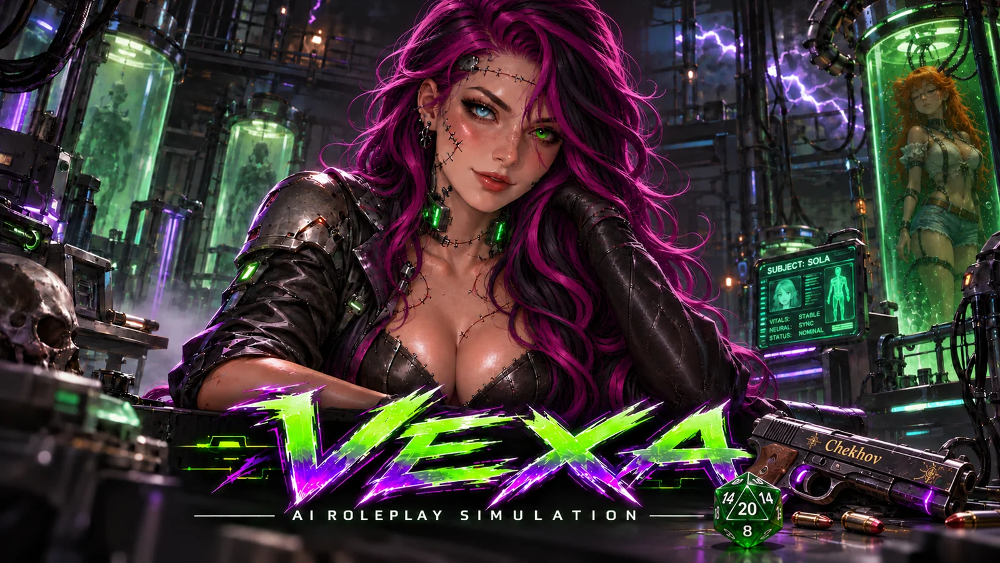

Vexa.
A roleplay preset for worlds that keep moving. Characters with their own knowledge, relationships, and reasons to act.

A world beyond
the conversation.
Vexa is a prompt preset for LLM roleplay and simulation. It organizes character behavior, scene progression, and persistent information so a conversation can build on what came before.
The project brings together modular rules, a staged prompting workflow, and state contracts for facts such as relationships, memories, and locations. TeleWire TRP-AO is the symbolic authoring approach used to organize those instructions.
Character continuity
Track relationships, memories, and changing circumstances across turns.
Knowledge boundaries
Separate what happens in the world from what each character can plausibly know.
World progression
Give off-screen activity, character agendas, and consequences a place in the simulation.
Structured prompting
Connect standing rules, turn-level procedures, and serialized state through explicit references.
Follow Vexa’s development
This page is the new home for Vexa. A current release guide, installation steps, and compatibility notes will be added here as the project documentation grows.
The public repository contains the project’s earlier FrankenSIM material. Its README describes an older version.
A few useful details
How does Vexa relate to FrankenSIM?
Vexa continues the FrankenSIM project’s work on stateful roleplay and world simulation. Earlier names and snapshots remain in the public repository and some documentation.
What is TeleWire TRP-AO?
It is Ryah’s attention-oriented adaptation of Tag Recall Prompting. It combines compact rule modules with distinctive symbolic cues and a page/function workflow. The whitepaper documents the design, token measurements, and proposed behavioral evaluation.
Where are the setup instructions?
A Vexa-specific setup guide is planned for this page. Until a current release and its requirements are documented here, treat the repository as historical project material.